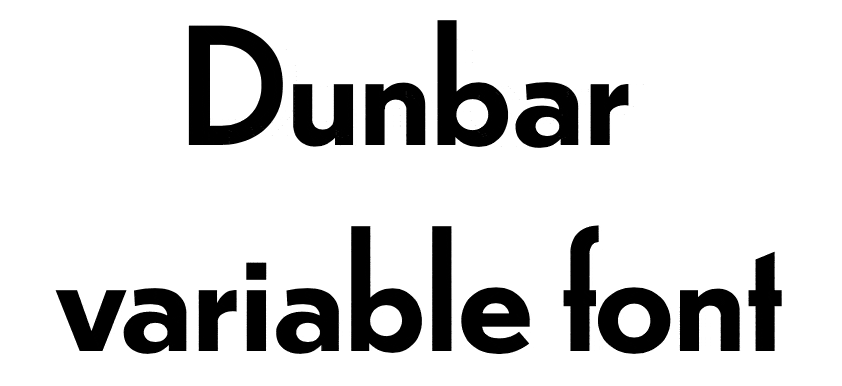
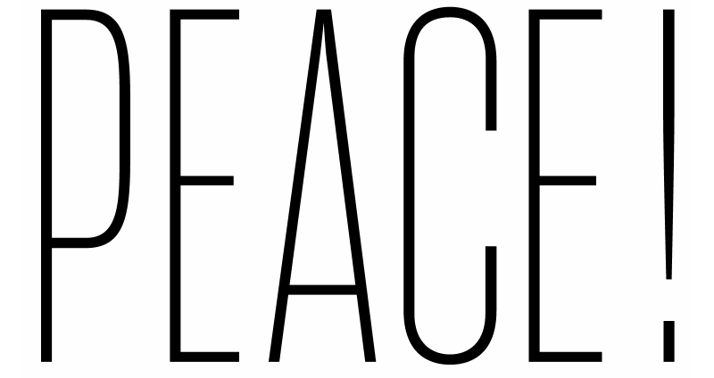

Myriad Pro <— Font family
- <— Faces
- Light
- Roman
- Bold
- Black
- Italic
- Condensed
fi
character(s), glyph(s)
é
character(s), glyph(s), font(s)
@font-face {
font-family: Arvo; /* Descriptor */
src: url(fonts/s.woff); /* Descriptor */
font-weight: bold; /* Descriptor */
}
h1 {
font-family: Arvo; /* Property */
font-weight: bold; /* Property */
}CAPITALE FULGURANT
et modeste avec ça
INCROYABLE astrale
1234567890ABC
1234567890abj
font-variant-numeric: ;
1/2 3/4 5/8
13/27 86/483
font-variant-numeric: ;| 112,113.56 |
| 89,546.87 |
| 286,111.10 |
font-variant-numeric: ;INCROYABLE
flaneur
font-variant-ligatures: ;
Roman
Italic
Bold
font-synthesis:;font-family:;
JAVA Ta Wa
font-kerning:;letter-spacing:em;

Painter Kafeel

COLR holds stack of TrueType outlines
CPAL holds color palette(s)
Painter Kafeel
SVG holds SVG graphics
CPAL holds color palette(s)
CSS variables to alter palette
Painter Kafeel
Painter Kaffeel
font-weight: 400;
font-weight: calc(9 * 100);
@font-face {
font-family: "Dunbar";
src: "dunbar.otf";
font-weight: 100 900;
font-stretch: 50% 200%;
font-style: -10deg 40deg;
}
h1 {
font-weight: 234;
font-stretch: 80%;
font-style: oblique 24deg;
font-optical-sizing: none;
}/* Supported in Safari!! (TP 16+) */
font-variation-settings:"wght" 2.4, "wdth" .7, "radi" .4;@keyframes expand {
from { font-variation-settings: 'wght' .3 }
to { font-variation-settings: 'wght' 3.1; }
}
This may be the most significant development for design on the web since responsive design itself
—Jason Pamental